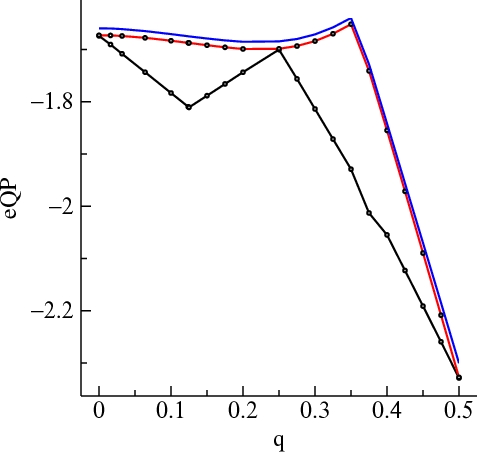

QSGW theory is an elegant way to choose the optimum noninteracting hamiltonian $H_0$ for GW calculations, rather than using the LDA for $H_0$, as is customary. A particularly valuable property of this optimum starting point is that the (real part) of the peaks of the interacting Green's function G and the poles of $G_0$ coincide. The eigenfunctions of $G_0$ are as close as possible to those of G, by construction. But what are poles in $G_0$ get broadened in G so quasiparticles lose weight. Thus the density-of-states, or spectral function, is composed of a superposition of δ-functions for $G_0$, but are broadened for G. Also the eigenvalues acquire an imaginary part, making the QP lifetime finite.
QSGW theory is described in some detail in Phys. Rev. B76, 165106 (2007) including details of how lmf is modified to use the QSGW self-energy, and how it coordinates with the GW package. Some modifications to the input file are required for lmf to read the QSGW self-energy.
In QSGW theory $G_0$ and G are closely linked. Associated with the two kinds of G are two kinds of density-of-states (DOS). There is "noninteracting" or "coherent" DOS, the spectral function of $G_0$ which is what is usually associated with DOS, and what is typically calculated by a band program such as lmf. There is also the true DOS (spectral function of G) which is what is approximately measured by e.g. a photoemission experiment. The GW package has a facility to generate both kinds of DOS; through the normal lmf process for the noninteracting DOS or by analyzing the spectral functions.
Once you have installed the executables, you can try out a demo LDA+QSGW calculation for Silcon.
The GW driver package contains an executable lmfgwd, which acts to set up input needed by the GW package. Its structure is similar to lmf but its function is to supply eigenfunctions and eigenvalues, matrix elements of the LDA potential, etc., to a GW package. lmfgwd works either with standard one-shot GW where G and W are generated from LDA or LDA+U, and QSGW.
The GW codes that work with lmfgwd also have a feedback to
Apart from these linkages, the GW package is completely separate from the FP-LMTO program. The GW package does not depend on the input files lmf and lmfgwd use (e.g. ctrl.ext and rst.ext). The GW code requires various kinds of input, most all of which is supplied automatically by lmfgwd through scripts that link the packages. The GW package has has one additional input file, GWinput, which you must create. lmfgwd can generate a template GWinput, which is very useful since GWinput is a little complicated and rather unfriendly. To make a template, invoke lmfgwd and enter −1 when prompted for a job number. You should then edit and modify this file. To make this template lmfgwd will read input from an (optional) category GW in ctrl.ext. Data from this category modify the defaults that enter into generation of GWinput.
lmfgwd initially operates in the same manner as lmf. After setting up the potoential it prompts for a job, which tells lmfgwd what to do.
lmf2gw is an additional program required to make the link to the GW package. It translates output of lmfgwd into a format the GW package uses. It should be compiled automatically with the --enable-gw switch when you invoke configure.
Finally, a pair of executables spectral and lmfgws are included with this package that generate spectral functions, either for individual QP levels or integrated over the Brillouin zone to make the density-of-states.
lmfgwd ext ...The standard input will prompt you for a job. Enter -1. lmfgwd will create a file GWinput.
The following tokens in the GW category (if present in your ctrl file) will affect the contents of GWinput.
NKABC GCUTB GCUTX ECUTS NBAND NIME DELRE DELTA DELTAW GSMEAR PBTOL QOFFP MKSIGSee the GW category in tokens.html.
lmgw is a multipurpose script that exercises the GW codes in many kinds of modes; in particular it can be used in one-shot calculations. Invoke lmgw without arguments to see what options are available. The following is a typical invocation:
lmgw --insul=19 --ht srtio3It calculates the QP energies as a 1-shot perturbation given an LDA pair of input files ctrl.ext and rst.ext, and file GWinput. There is an optional file `switches-for-lm,' that lmgw will use, if it is supplied. File switches-for-lm should contain only one line. Its contents are passed to lmf and lmfgwd as command-line arguments.
lmgw will carry out all the steps required for a one-shot calculation. The main results are kept in files TOTE2.UP (and TOTE2.DN in spin-polarized cases) and in a more readable format in files QPU (and QPD for spin-polarized calculations).
lmgw1-shot is a higher level script that calls lmgw. It greatly facilitates the exercising of lmgw by copying files in and out of directories to enable batch runs. lmgw1-shot calls extra scripts:
Prepare two directories, NOFLOAT and FLOAT. Each directory should contain its respective GWinput', switches-for-lm', (or distinct files ctrl.srtio3) and distinct rst.srtio3). The two directories serve as distinct input streams, in this case to two different LMTO basis sets: one containing floating orbitals and the other not. (Obviously you can make other kinds of variations such as vary entries in GWinput').
Do the 1-shot calculations:
lmgw1-shot --autoht --infgwx --insul=19 -job= FLOAT srtio3 lmgw1-shot --autoht --infgwx --insul=19 -job= NOFLOAT srtio3--insul=19 tells lmgw to define the zero at the 19th band. (The GW code always uses a particular level at the G point, i.e. q=0, in this case the level 19, for the reference).
Invoke lmgw1-shot with no arguments to see what the rest of the switches mean.
lmgw1-shot puts new files into directories NOFLOAT and FLOAT, e.g files:
ctrl.preprocessed.srtio3 GWinput switches-for-lm TOTE.UP dat job QPU TOTE2.UP version rst.srtio3Use xqp to retrieve data in a pretty format. This command generates QP data for levels 1,2,6,9,12,15,18,20 in 3 groups of 3:
xqp -lda -lst=1,2,6,9,12,15,18,20 -eshft=-.36,-.36,-.35 -qp=0.00,0.00,0.00 -qp=0.50,0.50,0.50 -qp=0.50,0.00,0.00 FLOATOutput:
qp=0.00,0.00,0.00 qp=0.50,0.50,0.50 qp=0.50,0.00,0.00
eQP eQP(noZ) eLDA eQP eQP(noZ) eLDA eQP eQP(noZ) eLDA
-32.70 -32.87 -32.49 -33.43 -34.46 -32.43 -33.14 -33.64 -32.57
-33.43 -34.49 -32.36 -33.43 -34.46 -32.43 -33.42 -34.48 -32.36
-16.99 -17.66 -16.13 -17.04 -17.66 -15.74 -16.97 -17.63 -16.09
-15.65 -15.91 -14.53 -15.99 -16.24 -14.82 -15.59 -15.85 -14.48
-3.00 -3.09 -2.85 -3.97 -3.87 -4.21 -3.01 -3.08 -2.89
-1.25 -1.27 -1.21 -3.65 -3.59 -3.79 -2.30 -2.25 -2.41
-0.36 -0.36 -0.35 0.00 0.00 0.00 -0.77 -0.79 -0.73
3.81 4.53 1.77 6.41 7.39 4.48 4.02 4.77 1.95
The -eshft switch was necessary here
because the QPU generator shifts the energy zero around by assuming
the VBM is at Gamma; for SrTiO3 the VBM falls at
(1/2,1/2,1/2).
To see the difference in the two QP calculations, invoke xqp with two
directories as:
xqp -lda -lst=1,2,6,9,12,15,18,20 -qp=0.00,0.00,0.00 -qp=0.50,0.50,0.50 -qp=0.50,0.00,0.00 FLOAT NOFLOATOutput:
qp=0.00,0.00,0.00 qp=0.50,0.50,0.50 qp=0.50,0.00,0.00
eQP eQP(noZ) eLDA eQP eQP(noZ) eLDA eQP eQP(noZ) eLDA
0.09 0.13 0.01 0.06 0.09 0.01 0.08 0.11 0.01
0.06 0.08 0.01 0.06 0.09 0.01 0.06 0.08 0.00
0.06 0.06 0.00 0.06 0.07 0.00 0.05 0.07 0.00
0.05 0.07 0.01 0.05 0.07 0.01 0.05 0.07 0.01
0.01 0.01 0.00 0.01 0.00 0.01 0.01 0.00 0.00
-0.02 -0.02 -0.01 0.01 0.00 0.01 0.00 -0.01 0.01
0.00 0.00 0.00 -0.01 -0.02 0.00 0.00 -0.01 0.00
-0.03 -0.03 -0.01 -0.02 -0.03 0.00 -0.02 -0.04 0.00
In the SrTiO3 case, floating orbitals don't matter much.
Run xqp with no arguments to see other options.
To perform QSGW calculations, simple shell scripts gwsc1shot and gwsc supplied in the GW package, and how to use them is documented in the GW manual. Alternatively, a high-level script lmgwsc can be used. It calls lmgw for a single iteration, then performs some checks, and calls lmgw again, cycling through iterations until convergence or the maximum number of iterations is reached. Convergence is checked by monitoring the RMS change in Σ and will stop iterating when a certain tolerance is met. lmgwsc `iteration 0' is approximately like gwsc1shot, except that the full Σ is made (including the off-diagonal parts). lmgwsc corresponds to gwsc in subsequent iterations. Invoke lmgwsc without arguments to see the various options.
RDSIG= token specifying whether to read the self-energy generated
by the GW package and add to to the LDA hamiltonian.
The argument of RDSIG= consists of three digits:
1s digit specifies whether to read Σ from file sigm.ext.
0 : do not read Σ
1 : read sigma but not symmetrize it
2 : read sigma and symmetrize using given symops.
10s digit interpolation mode; see Notes on interpolation of Σ
0 : Simple bloch sum of sigma
1 : (strongly recommended) approx high-energy states
with diagonal part of sigma.
2 : perturbation approach (not documented)
3 : Linear interpolation of sigma from neighboring points
(not documented)
100s digit is specific to 10s digit = 2. It specifies how many
neighboring points should be included in the interpolation.
Choosing 0 causes the program to choose the default value of 4.
10000s digit has to do with symmetry operations and how
lattice vectors are assembled.
1 Tells lmf that sigm.ext contains no
symmetry operations. Equivalent to --rsig:fbz.
2 tells lmf not to augment the standard nk1×nk2×nk3
lattice translation vectors that would follow from
standard inverse fast fourier transform. By default
some extra vectors are added to make the system
compatible with symmetry operations. If you use this
option, you cannot symmetrize sigma.
4 warning on file k-point mismatch. Normally
a check is made that the k-points read from sigm.ext,
match k-points in the list of irreducible k-points constructs itself.
By default the program will abort if a mismatch is found.
Use this switch when, e.g. you deform a lattice slightly and want to
use estimate sigma from the sigma for the original lattice.
Linear combinations of these switches are allowed.
RSRNGE= token specifying the maximum range of the r.s. sigma (units of alat)
computed by Bloch transform of Σ(k) generated by the GW package (see below).
q-points in full BZ where sigma calculable ... BZMESH: 18 irreducible QP from 18 ( 3 3 2 ) shift= F F F Irr. qp for which sigma is calculated ... BZMESH: 6 irreducible QP from 18 ( 3 3 2 ) shift= F F F hft2rs created hrs: ndhrs=29 max Re(hrs) = 1.21 max Im(hrs) = 6e-4The correctness of this inverse FT is checked by computing the Forward FT of Σ(T) at the known k-points; and the difference in the two is printed in the lines
comparing s(iq) to interpolated sq for iq= 1 errmx= 5.6E-17 at i,j= 30 30 comparing s(iq) to interpolated sq for iq= 2 errmx= 6.2E-17 at i,j= 34 34 ...The error should be approximately that of machine precision. Next, if you so specify (see token RDSIG), lmf will symmetrize Σ(T) according to the given group operations; the difference in the file Σ(k) and FT of the symmetrized Σ(T) is checked once again. Because of small numerical errors in the generation of Σ, the symmetrized Σ will differ a little from the unsymmetrized one. "maximum error" in the following output indicates the effect of symmetrization:
rsmsym: symmetrizing complex s(1..1704) using 8 group operations symstr: max asymmetry = 7.93e-7 check FT s(R) against s(q) ... maximum error = 6.2e-5 check FT s(R) against s(q) ... maximum error = 6.2e-5 spin 2
sigma = alpha*(sigm.ext) + beta*(sigm1.ext)
by invoking lmf with
--mixsig=alpha,betaIf second parameter is missing, the effect is to read sigm.ext scaled by factor alpha.
lmf's current implementation does not allow you to generate m-resolved $G_0$ DOS with symmetry operations turned on. To work properly eigenfunctions must be rotated to the full BZ from the irreducible set to integrate an individual m component of the DOS over the BZ. Since this has not been implemented, you must turn of symmetry operations. To do this when including Σ, you must do the following:
1. Create a self-energy file (sigm.ext) without symmetry.
Do this by invoking lmf --wsig:fbz ... .
This will cause lmf to write a new file sigm2.ext with the
same structure as sigm.ext, but generated for points
in the entire BZ.
2. copy sigm2.ext to sigm.ext.
(Note: you will probably want to preserve the original file!)
3. Turn off symmetry operations in your ctrl file, to make the irreducible k-points
correspond to the the entire BZ, e.g. add a line
SYMGRP E
This should enable you to generate partial DOS in the same manner as is done for the LDA, described
here.
The full syntax is:
--rsig[~ascii][~rs][~fbz][~shftq[=#,#,#]Note: delimiter `:' separating options can actually be any ascii character, e.g. `^'. (Sometimes you can't use `:' as the delimiter because it may used in one of the arguments, and you will confuse the parser.)
~ascii Data is read in ascii format from file sigma.ext (default is binary)
~rs Sigma is stored on disk in real space. The inverse Bloch sum has already been performed.
If either of the preceding two switches is used, the file name changes to:
k-space real-space
binary sigm sigmrs
ascii sigma sigmars
~fbz flags lmf that the sigma file contains no symmetry operations.
Equivalent to setting 10000s digit=1 in token RDSIG= .
(Not meaningful if the ~rs switch is used)
~shftq=#,#,# tells the program that Σ(k) stored in file 'sigm'
was generated on a kmesh offset by #,#,#
~shftq without arguments performs the same function; the offset is taken from a default.
You can manipulate the static Σ file in various ways. To do this, include --wsig on the command line: lmf will write an output Σ file, usually named sigm2.ext so as not to overwrite existing files. Whenever it writes a file lmf exits without further processing.
There are two self-energy editors corresponding to the two forms of self energy in QSGW: see the tutorial for analysis and manipulation of these forms. You can use this --wsig to generate, for example, a properly symmetrized self-energy (see RDSIG).
Additionally you can make several modifications that change what is written to sigm2.ext, though switches passed with --wsig. The full syntax is, with available options:
--wsig[:fbz][:newkp][:onesp][shftq[=#,#,#]][:rot=rotation-string][:edit][:phase][:trans=#]Note: delimiter `:' separating options can actually be any ascii character, e.g. `^'. (Sometimes you can't use `:' as the delimiter because it may used in one of the arguments, and you will confuse the parser.)
The options do the following
:fbz causes lmf to ignore symmetry operations and generate a sigma
file for k-points in the entire BZ. It is useful when generating a
sigma file that allows fewer symmetry operations, e.g. when making the
m-resolved density-of-states, or creating a trial sigm.ext for a sheared crystal.
Note: to read a sigm file generated by --wsig:fbz, set
the 10000's digit in token RDSIG, or use --rsig:fbz
:ascii sigm2.ext will be written in ascii format
:newkp causes lmf to use the mesh used by the lmf program. By default
lmf generates sigm on the mesh as defined in the sigm file.
This switch enables the user to interpolate the sigma to a new k mesh.
:onesp (for spin-polarized case) causes lmf to average the up- and down-
self-energies, and write a nonmagnetic self-energy to disk.
:shftq=#,#,# is used in conjunction with trans=#, where #=1,2,3; see below.
It flags that an offset of #,#,# should be added to the standard k mesh
when generating transformed Σ.
to avoid inadvertant swap of (nearly) degenerate LDA eigenvalues as the LDA basis
set is changed. (The scheme requires that eigenvalues in the two basis sets
synchronize in the energy range of interest).
:rot=rotation-string causes lmf to rotate sigm to a coordinate
system, whose rotation is specified by 'rotation-string'.
Here is an example :
lmf si --wsig^rot=z:.1,y:2,z:.3
cp sigm2.si sigm.si
... Edit the STRUC category to include ROT=z:.1,y:2,z:.3 and then do:
lmf si --rs=101
Points to note:
1. Switch --rs=101 tells lmf to rotate the local charge density read from
the restart file.
2. Note the use of caret (^) as delimiter, since (:) is needed in the string
3. rotations.html describes how to specify a rotation.
4. Be advised that the interpolation may not proceed in exactly
the same way in the rotated and unrotated systems, owing to different
sets of lattice vectors taken for large r. To minimize these differences,
work with a symmetrized self-energy as much as possible, and
read the density (and lattice positions) from the same restart file.
The example below follows the recommended procedure. The STRUC
category of input file ctrl.si has this segment:
%ifdef rot
ROT=z:.1,y:2,z:.3
%endif
which applies a rotation when variable rot is nonzero.
Also the HAM category has token RDSIG=sig.
... first step symmetrizes sigma
lmf si -vsig=12 -vrot=0 --wsig
cp sigm2.si sigm.si
... this pass in the unrotated coordinated system
lmf si -vsig=12 -vrot=0
... should match this pass in the rotated coordinated system
lmf si -vsig=12 --rs=101,0 -vrot=0 --wsig^rot=z:.1,y:2,z:.3
cp sigm2.si sigm.si
lmf si -vsig=12 --rs=101,0 -vrot=1
:trans=# is designed to enable transformations of Σ(k)
to new basis sets.
trans=1 causes lmf to read Σ(k) (file sigm) in its usual form (orbital basis)
and transform it to the LDA basis. ΣLDA(k) is written to file sigm2.
trans=2 is similar, but the high-energy part of ΣLDA(k) is replaced before
it is written, as described here.
trans=5 also substitutes the high-energy part of ΣLDA(k), but stores
Σ(k) in the orbital basis.
trans=3 causes lmf to generate and LDA eigenfunctions ZLDA(k) and store them
in file 'evec.' Σ(k) is not used in this mode; file sigm is not touched.
Note: you must run trans=1 first because it generates a list of k-points.
trans=-1 reads ΣLDA(k) from file 'sigm2' and ZLDA(k) from file 'evec'
and generates Σorb(k), i.e. Σ in the usual orbital basis.
The transformed file is written into file 'sigm3'.
The following sequence should: make sigma(LDA) and evec, and then transform sigma(LDA)->sigm(orb)
It should recover the original sigm file (apart from numerical imprecision).
doing nothing (except for roundoff errors)
lmf ext --wsig:shftq:fbz:trans=1
lmf ext --wsig:shftq:fbz:trans=3
lmf ext --wsig:trans=-1
cp sigm3.ext sigm.ext
... run with:
lmf ext --rsig:fbz:shftq
However, you can change the orbital basis between lmf invocations, thus
transforming sigm to a new orbital basis.
The following is the recommended way to remake sigm in a new basis
lmf ext -vsig=12 --rs=1,0 -vnit=1 -vemaxs=2 --pr45 --wsig:trans=5
cp sigm2.ext sigm.ext
cp sigm.ext sigm.ext~
lmf ext --wsig:shftq:fbz:trans=1
... change basis set in input file
lmf ext --wsig:shftq:fbz:trans=3
lmf ext --wsig:trans=-1
cp sigm3.ext sigm.ext
... run with:
lmf ext --rsig:fbz:shftq
For an example, after running test
gw/test/test.gw si
Do:
cp gw/test/si/sigm.si .
rdcmd '-f:#rdcmd:%2f' -cat:TSIGT --noerr ctrl.si > out.trans.si
:edit invokes an interactive editor that allows you to modify
elements in the sigma file
:phase causes lmf to scale rows and columns associated with particular
sites in the sigm matrix by a q-dependent phase. This is
because in the standard FP program lmf, the structure matrix
is computed by Ewald sums which contain extra site-dependent R_j
and q-dependent phases
exp(i q.R_j)
in when summing over sites R_j in the lattice. The
coordinates R_j are internally shifted automatically by some
combination of lattice vectors, to shorten their length and
avoid convergence problems in the Ewald sum.
For that reason, when using the sigm file generated by
rot=... , the user is strongly advised to construct the
input file and its basis vectors in the unrotated coordinate
system, and rotate the lattice and basis vectors through the
ROT= token in the STRUC category.
(The syntax for this string is identical to :rot= above.)
Additionally, the site positions should be read through the
rst file, as they will not be further shortened by lmf.
Use option :phase if for some reason you do change the
shortening of lattice vectors. For this option to work, the
translation vectors must be supplied in a file
shorps.ext. lmf reads this file and scales
sigm accordingly.
You can create file shorps.ext by hand, or do it automatically.
Either way, you must coordinate the positions lmf
actually uses with the sigm file.
To generate file shorps.ext automatically, you can invoke lmf
with the switch --shorps, which, after reading site positions from
file rst.ext, further shortens the site positions and saves
the lattice translations used for shortening in shorps.ext.
Take care to rewrite file rst.ext, e.g. by invoking
lmf --shorps ... with no iterations.
Once shorps.ext is created, you can generate a new sigma:
lmf --wsig:phase ...
cp sigm2.ext sigm.ext
With both files rst.ext and sigm.ext altered,
lmf should generate identically the same eigenvalues
and output density.
1. Because the starting sigm.ext has higher symmetry than the case of interest, the new sigm.ext may require more irreducible k-points.
2. The sigma file reader will by default require the k points in the file correspond to the k points generated by lmf. This will no longer be the case if you want to adapt sigm.ext to a distorted mesh.
Supposing for definiteness that your input file has token RDSIG set by variable sig and that you want to make a shear distortion along the [001], which you control by variable tet:
HAM RDSIG=sig STRUC SHEAR=0 0 1 tet
To solve problem 1 above, generate a new sigm.ext on a mesh without any symmetry operations:
lmf ... original arguments ... --wsig:fbz cp sigm2.ext sigm.ext
Now you are in a position create a useable sigm.ext. Change your input file or alter command-line switches for the symmetry-changing distortion. You also must tell the sigma reader to (1) that the input sigm.ext has no symmetry operations and to overlook the mismatch in k-points. To this end, use token RDSIG=50011. In the above example, you would not change the input file but invoke:
lmf ... original arguments ... -vsig=50011 -vtet=1.01 --wsig:newkp cp sigm2.ext sigm.ext
This will create a sigm.ext with the k-points appropriate to the distorted lattice.
To accomplish this we use and algorithm to interpolate Σ betweeen points where it has been calculated. It turns out that it is difficult to do. The difficulty apparently arises in interpolating Σ at high energies, typically above 2 Ry. One essential thing is that the envelope functions cannot be too long-ranged. Thus, when doing QSGW calculations you should set the LMTO envelope parameters EH to -0.3 Ry, or in some cases (2nd row elements especially) a bit deeper.
A couple of procedures have been developed to circumvent this problem, which you can specify by the 10s digit of the HAM_RDSIG token. Our experience to date suggests that RDSIG=1x is the only reliable mode, but other modes are documented here for completeness. (The 1's digit, x, is normally 1 or 2; refer to HAM_RDSIG in tokens.html).
RDSIG=0x: Interpolate Σ by forward Bloch transform of Σ(T). This is the simplest, but it doesn't work.
RDSIG=1x:
Above a certain cutoff specified by the user, the off-diagonal
part of Σ in the representation of LDA eigenstates is eliminated.
Moreover, the diagonal part of Σ (sigii) is constrained
for these high-lying states. That is, Σ is transformed
to the basis of eigenfunctions defined by LDA hamiltonian, with the
states ordered in ascending order of the LDA eigenvalues. In
this representation, the self-energy for states above a cutoff
(you choose the cutoff either through SIGP_NMAX or SIGP_EMAX, below) is
taken to be diagonal, and the diagonal part constrained.
We assume for the rest of this section that RDSIG=1x.
The interpolation requires additional input, which you specify with tokens in the HAM_SIGP tag. Recommended is something like:
HAM SIGP[MODE=4 EMAX=2]The full syntax is:
SIGP[MODE=modsgp NMIN=nmin EMIN=emin NMAX=nmax EMAX=emax A=asig B=bsig EFIT=#]MODSGP controls how the digaonal part is to be evaluated. MODSGP=4 is recommended (the diagonal part is constant, with the value supplied by the program). In any case the result should not depend much on the choice. The following describes the tokens in SIGP:
You can also constrain to be either larger than,
or equal to, a specified linear function of the LDA energy
(asig+bsig*Elda) It turns out that sigma is reasonably
linear in Elda. In any case, these high-lying states should be far
enough away from the Fermi level that their effect should be
small, and the result should depend very little on the choice
of constraint. Another point to keep in mind is that by
approximating Σ for these states, you ensure that the LDA
and quasiparticle eigenvectors for those states are the same.
Further, you can elect to eliminate the off-diagonal parts of
sigma for the lowest-lying states. In this case, there is no
option to constrain sigii.
MODE selects how the constraint for the diagonal elements of Σ is applied:
0 constrain sigii to be > asig+bsig*Elda
1 constrain sigii to be = asig+bsig*Elda
2 constrain sigii to be asig < sigii < bsig
3 constrain sigii as in modsgp 1. The difference between
modes 1 and 3 are merely informational.
4 constrain sigii to be a constant. Its value is
calculated by the GW package and read from
sigm.ext. This mode requires no information from the user.
It is the recommended mode, available in version 7.7 or later.
Default: 4
NMIN is an integer specifying how many of the lowest-lying
states are approximate sigma by discarding the
off-diagonal parts in the basis of LDA functions.
If nmin is zero, no low-lying states are approximated.
Default: 0
EMIN is an alternative way to specify approximation of low-
lying sigma. It is only used if nmin<0, which which case
emin is an energy cutoff: states below emin are approximated.
Default: not used
NMAX is an integer specifying which of the highest (LDA)
states are to be approximated. States higher than nmax
have the off-diagonal part of sigma stripped; moreover
(unlike the low-lying states) the diagonal part of sigma
is constrained (see modsgp above).
If nmax is <= 0, it is not used; see emax below.
Default: 0
EMAX is an alternative way to specify approximation of high-
lying sigma. It is only used if nmax<=0, which which case
emax is an energy cutoff: states above emax are approximated.
Default: 2
A is the coefficient asig in the linear fit (modsgp 0..3)
If modsgp=4, asig is not used.
In the linear constraints (modes 0,1) it is the constant
coefficient; for modsgp=2, it is the lower bound.
Default: 0.02 (good estimate for Si)
B is the bsig coefficient in the linear fit (modsgp 0..3)
If modsgp=4, bsig is not used.
In the linear constraints (modes 0,1) it is the linear
coefficient; for modsgp=2, it is the upper bound.
Default: 0.06 (good estimate for Si)
EFIT lower bound for least squares fit; see next section.
If modsgp=4, efit is not needed.
Notes on estimation of asig and bsig (modsgp=0..3):
lmf will supply you information to find reasonable estimates for
asig and bsig. For modsgp<3, it will make a least-squares fit
to sigii for states higher than efit. For modsgp=3, it will make
a least-squares fit for states between efit and emax. You must
use the latter if you are going to only going to calculate sigma
for states above some emax (set as in the last lines in the
GWIN0 file). For the former, you must invoke lmf ON THE MESH of
k-points for which sigma is known (there appear to be fewer
problems with interpolation on that mesh). lmf accumulates the
minimum, maximum, and least-squares fit for the as-given sigma
for all the states above the cutoff. (Look in the output for a
line beginning with "hambls:". Also, if you set the verbosity
above 45, lmf will print out the calculated sigii for each of
these states, together with the constrained value.) For either
style, lmf will write to file sigii.ext the data used to make
the fit, and summarize the fit and the end of the file.
mode 2: is an experimental perturbation approach that is not documented.
mode 1 works well enough that it is probably not needed.
mode 3: linearly interpolates sigma in the basis of the LDA wave
functions, by finding k-points in the vicinity of the desired
k-point and performing a linear interpolation. Our
experience to date suggests that mode 1 is the
most reliable. The default number of k-points used in the
interpolation is 4. You can specify a different number
with the 100s digit of token RDSIG).
lmgw --chixNLF --big --ht extExtracting exchange parameters from output of --chixNLF mode
lmf --pr30 '--chimedit~new 43~read tkrs~export qx0q~exchange~a' ctrl.ext [switches] ln -sf Jmat_X0inv_w0eb.allq resultsThis generates file 'results' which must be in turn massaged to generate exchange J. The following commands put it in a form the ASA program lmgf can read. If these 43 points were generated from an 8x8x8 mesh, which is set by switch nk1 in the ctrl file), do the following:
lmf --pr80 --rs=1,0 -vnit=0 -vnk1=8 --noinv --wpos=pos ctrl.ext [switches] | tee out.tmpIt generates files pos.ext and out.tmp . (pos.ext may be needed if you have more than one atom/cell.) Run this script, located in the startup directory of the lmto package:
lm/startup/preAllpoints.shIt generates files allpoints_m, allpoints, and points. The last two are need for the next step.
map-results-irr-to-fbz -takao3:1:3.5 -ft --checkIf you have more than one atom, you should specify positions to possibly adjust phases. This program should create a file jr.dat, which you can rename as jr.ext and use as input for lmgf, mode 11.
--- Specify qp and band indices at which to evaluate SigmaChange it to read as follows (you can modify the two numbers):
***** ---Specify the q and band indices for which we evaluate the omega dependence of self-energy ---
0.01 2 (Ry) ! dwplot omegamaxin(optional) : dwplot is mesh for plotting.
: this omegamaxin is range of plotting -omegamaxin to omegamaxin.
: If omegamaxin is too large or not exist, the omegarange of W by hx0fp0 is used.
Then invoke hsfp0 like this:
echo 4 | hsfp0 > out.hsfp0Note: this calculation may be time consuming. hsfp0 will generate files SEComg.UP (SEComg.DN).
Program spectral will read this file and generate spectral functions for each k-point and band read from SEComg.UP. A number of switches are available that enable you to tailor the results. For example:
spectral --eps=.005 --domg=0.003 --cnst:iq==1&eqp>-10&eqp<30generates spectral functions :
spectral --ws --nw=1 mv se se.extFile se generated by spectral must be renamed with the extension used by the standard package, as shown.
lmfgws takes as input the same files lmf and lmfgwd use. Invoke lmfgws with --sfuned. This starts the spectral function editor, which can do various things. Type '?' to see options, or try out out the example below.
Particularly useful is the ability to generate the spectral functions for an arbitrary k-point by interpolating the GW Σ to that k. It can also generate the spectral DOS (spectral functions summed over QP levels and integrated over the entire BZ) on a fine k-mesh, to make a smooth spectrum DOS (1/π Im G) and noninteracting DOS (1/π Im $G_0$).
For an example, in the top-level directory do the following:
gwd/test/test.gwd fe 4 gwd/test/test.gwd fe 5(Note: Each of these steps is time consuming.)
After file se.ext is created, this test invokes lmfgws as follows:
lmfgws fe `cat switches-for-lm` '--sfuned~units eV~readsek~eps .030~dos isp=1 range=-10,10 nq=32 nw=30~savesea~q'lmfgws takes commands interactively; alternatively you can supply the commands as arguments to --sfunded as shown above. In this example the arguments do the following:
units eV tells the editor you want to work in eV units
readsek reads file se.fe
eps .030 Constant added to Im Σ thus G is further (artificially) broadened by eps.
For $G_0$ eps is the only broadening.
dos isp=1 range=-10,10 nq=32 nw=30
generates the spectral DOS, over an energy window of (-10,10) eV.
The k-mesh is interpolated to 32 divisions to converge the DOS well.
The energy mesh given by se.fe is subdivided 30-fold.
savesea saves the DOS in a file sdos.fe
q exits the editor
The noninteracting DOS (Im $G_0$) should tally with the DOS lmf generates. You can confirm that such is the case for the Fe test case. Relative to the top-level directory, file gwd/test/fe/dosp.fe.gz contains DOS generated by lmf. Running checks 4 and 5 as above, you should obtain a file sdos.fe, which should match to gwd/test/fe/sdos.fe.gz. To see how how the spectrum DOS, the $G_0$ DOS, and DOS generated by lmf compare, do :
gunzip -c gwd/test/fe/sdos.fe.gz > sdos.fe gunzip -c gwd/test/fe/dosp.fe.gz > dosp.fe fplot -f gwd/test/fe/plot.dosYou should see that the DOS from dosp.fe (black) is very similar to the $G_0$ DOS (gray) generated by lmfgws (3rd column in file sdos.fe) They are not quite identical because lmf generates the DOS with the linear tetrahdron method; the $G_0$ DOS is generated by sampling with Lorenz broading. Peaks in spectrum DOS (red) are broadened or even damped out.
Spectral Function Ai(ω,q)
You can generate the spectral functions Ai(ω) for a particular QP level Ei
at an arbitrary q vector. For the Fe example,
lmfgws fe `cat switches-for-lm` '--sfuned~units eV~eps .01~readsek~se q=1.05,2.91,1.01 ib=2 nw=10 isp=1~savesea~q'generates a file seia.fe for the spectral function of the 2nd band, at q=1.05,2.91,1.01 (q is in units of 2π/a).
seia.fe contains these columns:
# omega Re sigm-vxc Im sigm-vxc int A(w) int A0(w) A(w) A0(w)
One thing to check is that $\int A_0(\omega)\,d\omega$ over the entire energy
window is close to unity. That information is printed out in a line
like this:
int A(w)dw = 0.826994 int A0(w)dw = 1.006518
If the integral differs substantially from 1, probably your
eps is too small compared to the frequency mesh spacing
(nw= subdivides the mesh generated by hsfp0).
Look for a line in the output like the following one:
window (-27.233,27.191) dw=0.01361 eps=0.01000
dw is the spacing between energy points, and it should be smaller than eps, or at most of the same order.
The interacting $\int A(\omega)\,d\omega$ should be close to unity too, if the ω-integration limits are sufficiently large.
The incoherent part of A is spread out over a very large energy,
which can only be captured by running hsfp0 over a large energy window.
To generate the spectral function A(ω) at an arbitrary q, Σ(ω,q) has to be interpolated to the desired q. It is accomplished by linear interpolation from the four nearest k-points. The interpolation is somewhat crude, mainly because the linear interpolation does not reliably describe the shift in the QP peak. To improve on this you can tell the spectral function generator to generate QP levels independently, and substitute them for those read from the se file. It also generates the QP level at the desired q and imposes the QSGW condition ReΣ(ω,q)−Vxc(q)=0 at the calculated QP energy for that q. You make lmfgws do this by adding the getev option, as follows:
lmfgws fe `cat switches-for-lm` '--sfuned~units eV~eps .01~readsek~evsync~se q=1.05,2.91,1.01 ib=2 nw=10 getev isp=1~savesea~q'Note the evsync tag as well as the addition of getev. evsync is not required, but it does improve the accuracy slightly. evsync calculates the Fermi level for the given QSGW potential, and shifts the ω-spectrum so that the zero frequency aligns with EF calculated by lmf. It should be close to the one calculated by the GW code but lmf's integration scheme is better. To see the shift, and verify it is essentially constant, look at the output after the band pass. The Fermi level is printed out, the average shift relative to QP levels supplied by the input se.fe, and the RMS deviation about the average. For the shift to be truly constant, the RMS deviation should be negligible.
evalqp: Ef=0.115652. Shift bands to Ef=0 and scale to eV ...
Average shift = 0.021058 RMS deviation about avg = 0.000053
The ω-interval is shifted and the shift will indicated in the next line of the output file.
sugws: shifting omega interval by 0.021058 to (-27.232658,27.190542)After generating the shift, lmfgws enforces the QSGW condition $\Sigma_i(\omega{=}E_i)=V_i^{\rm xc}$ by adjusting Vixc. The adjustment it makes is summarized in the next output line:
<eQP-w(sig-vxc=0)>=0.025214 RMS=0.248736 <−(sig-vxc)_w=eQP>=0.000006 RMS=0.000041 (adjusted)The third number shows the mean adjustment to Vxc: it should be small, as should the RMS difference. (The first average and RMS show how much the ω-axis would have to shift to meet the QSGW condition; this number can be large for states far from EF and is not so meaningful.) 
job sigfun command segment Output 1 se q=0.75,0.5,0.50 ib=2 eQP=-2.60341 om_Amax=-2.539082 shift=0.064328 2 evsync~se q=0.75,0.5,0.50 ib=2 eQP=-2.624466 om_Amax=-2.560139 shift=0.064327 3 evsync~se q=0.75,0.5,0.50 ib=2 getev eQP=-2.624466 om_Amax=-2.560139 shift=0.064327 4 evsync~se q=0.75,0.5,0.55 ib=2 eQP=-2.595838 om_Amax=-2.536366 shift=0.059472 5 evsync~se q=0.75,0.5,0.55 ib=2 getev eQP=-2.616804 om_Amax=-2.554370 shift=0.062434 6 evsync~se q=0.75,0.5,0.55 ib=2 getev=16 eQP=-2.608861 om_Amax=-2.547603 shift=0.061258Job 1 is a straight evaluation of A(ω) at q=0.75,0.5,0.50. This q is equivalent to one of the irreducible k-points, so the k-interpolation is perfect. Note that the maximimum in A(ω) does not quite coincide with the QP peak. This occurs because of the ω-dependence of Im Σ.
Simulating ARPES
Work in progress.
Q: When I do Ni with 10×10×10 divisions, I get
hft2rs created hrs: ndhrs=39 max Re(hrs) = 0.771 max Im(hrs) = 2.33e-9 i j diff bloch sum file value 21 1 0.000174 -0.036707 0.000000 -0.036533 0.000000 Exit -1 rdsigm: Bloch sum deviates more than allowed tolerance (tol=5e-6)What does this mean? or how to avoid the problem?
HAM RSRNGE=8In the output, look for where the sigma is read in. You will see something like this output
RDSIGM: read file sigm and create COMPLEX sigma(R) by FT ...
Sigm will be approximated by: diagonal Sigma for high and low states
Approximate sigma for energies E(lda)>2.5
For high states Sigii = 0.000 + 0.080 * E(lda)
Linear fit to diagonal sigma for E(lda)>0 and E(lda)<2.5
sigm file has 20 irreducible QP: nk = ( 4 4 4 ) shift= F F F
hft2rs: make neighbor table for r.s. hamiltonian using range = 5 * alat
pairc: 8278 pairs total 4139 is max cluster size
hft2rs: found 256 connecting vectors out of 256 possible for FFT
range = 5 * alat means that RSRNGE=5 (default value). If RSRNGE is
large enough, this line
hft2rs: found 256 connecting vectors out of 256 possible for FFTindicates that all possible connecting vectors were found (as they are in this example); then there should be no problem.